🎯 Цели занятия
- Самостоятельно построить дом и светящийся фонарь
- Использовать Toolbox для быстрой вставки готовых объектов (деревья, забор, колодец, скамейка)
- Работать с материалами (Neon, Glass, Wood, Metal) и цветами
- Настроить атмосферу (небо, время суток) и добавить точечный свет (PointLight)
| Этап занятия | Время | Что делаем |
|---|---|---|
| Теория: Toolbox, PointLight, материалы | 10 мин | Обзор инструментов |
| Задание 1 — Дом | 25 мин | Строим дом с окнами, дверью, стеклом |
| Задание 2 — Фонарь (PointLight) | 15 мин | Строим фонарь, добавляем Neon и свет |
| Задание 3 — Toolbox-деревня | 15 мин | Вставляем готовые деревья, забор, колодец, скамейку, мост |
| Задание 4 — Атмосфера | 10 мин | Меняем небо, время суток, туман |
| Задание 5 — Группировка и сохранение | 5 мин | Объединяем карту |
| Опрос и итоги | 5 мин | Проверяем себя |
| Итого | 85 мин | — |
0 Инструменты: Toolbox и PointLight
🧰 Toolbox — магазин готовых моделей
Панель Toolbox (слева или View → Toolbox) содержит тысячи бесплатных моделей. Достаточно ввести в поиске «tree», «fence» или «bench» и перетащить понравившийся объект на карту. Не нужно строить всё вручную!
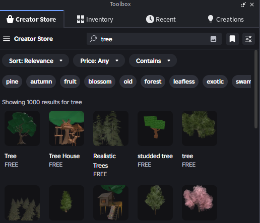
💡 PointLight — точечный свет
PointLight превращает объект в лампочку, которая светит во все стороны. У него есть настройки: Range (дальность света), Brightness (яркость), Color (цвет).
Чтобы добавить: выдели объект → нажми + в окне Properties → выбери PointLight.
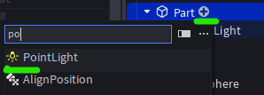
🎨 Быстрый доступ к цвету и материалу
На вкладке Model есть готовые кнопки для изменения цвета и материала. Выдели объект → выбери цвет или материал из выпадающего списка.
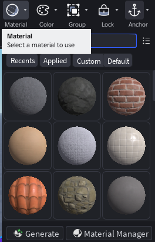
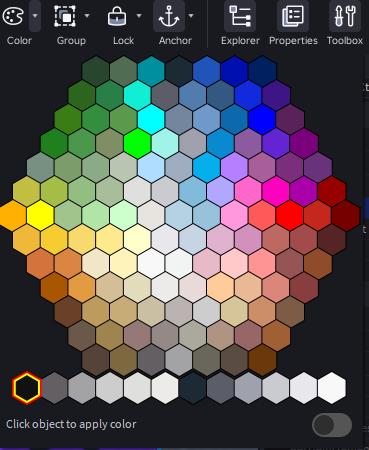
Нажми на вопрос — Алиса ответит тебе прямо сейчас!
🏠 Задание 1 — Строим дом
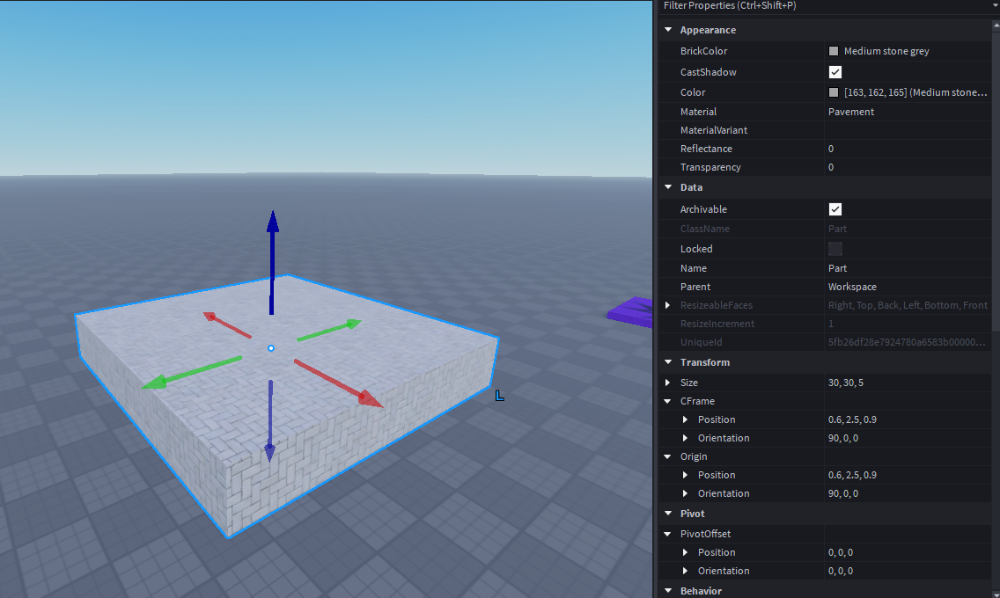
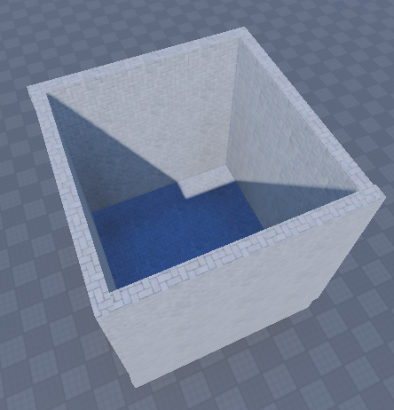
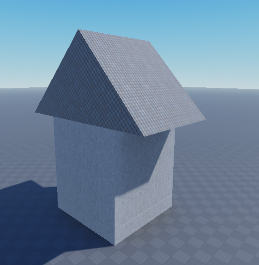
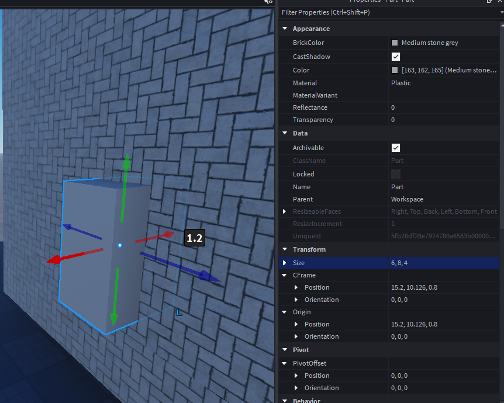
- ⚡ Ctrl+выделение → Union
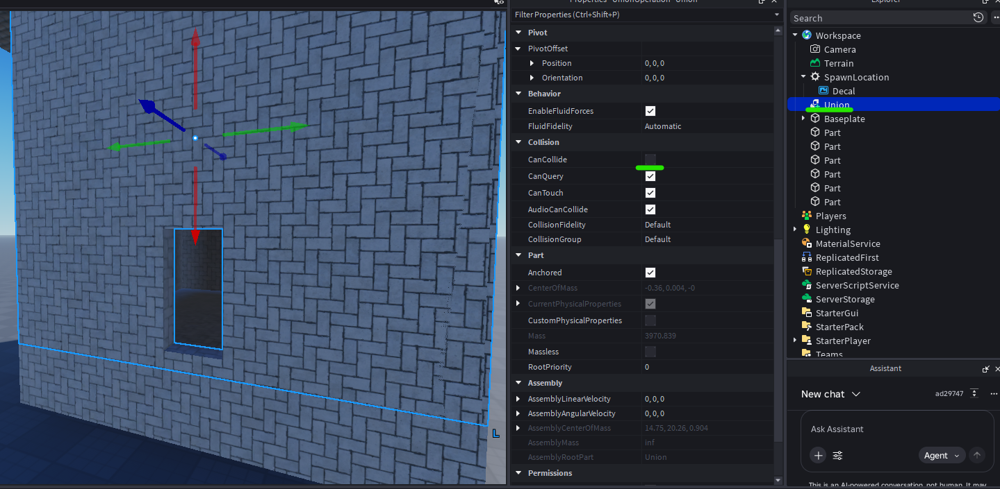
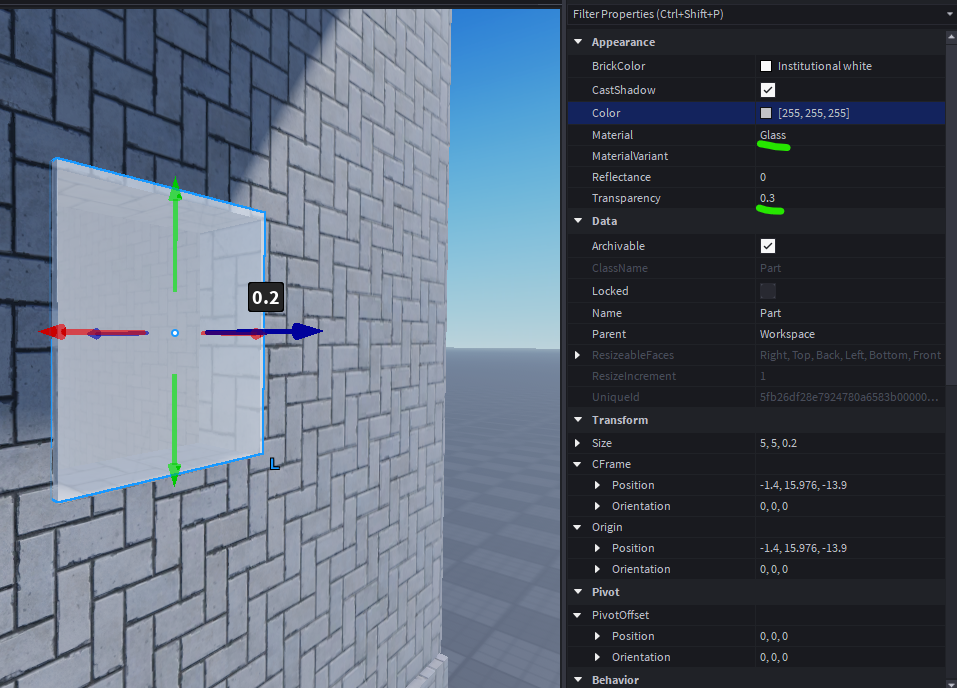
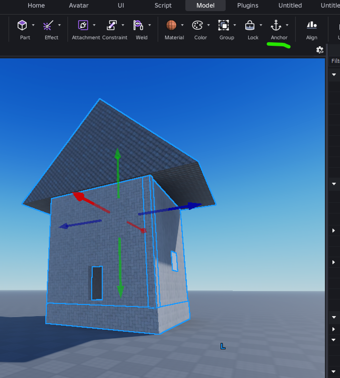
💡 Задание 2 — Светящийся фонарь (PointLight)
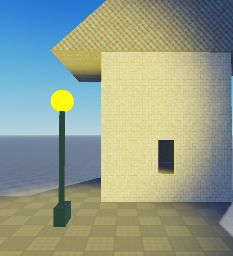
Фонарь со светящейся сферой из материала Neon и точечным светом.
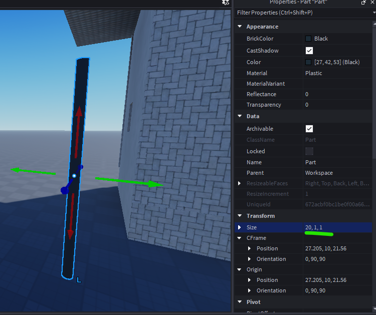
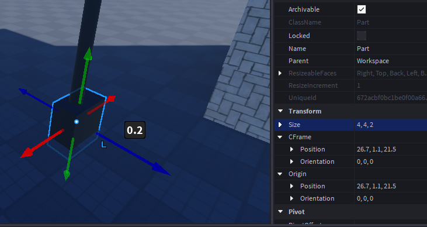
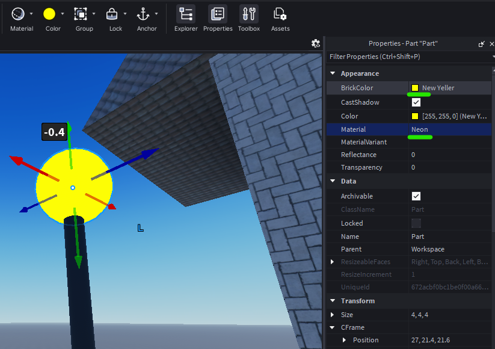
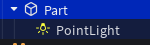
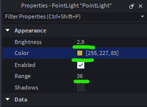
🧰 Задание 3 — Собираем деревню из Toolbox
Теперь наполним карту готовыми объектами из Toolbox. Открой Toolbox (View → Toolbox) и найди нужные модели.
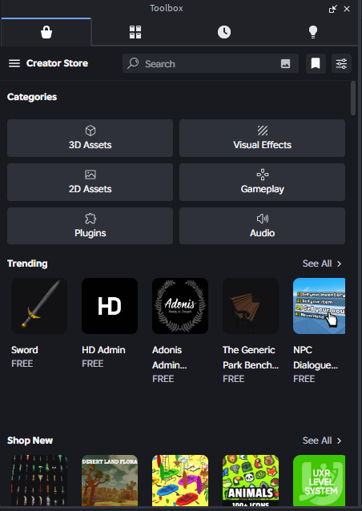
🌅 Задание 4 — Атмосфера: небо и время суток
Найдём объект Lighting в Explorer. Он управляет освещением, небом и временем суток.
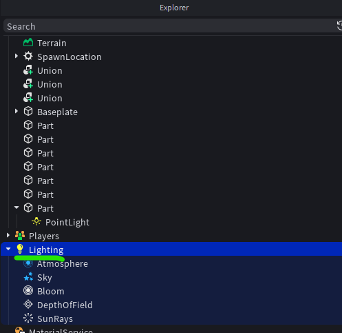
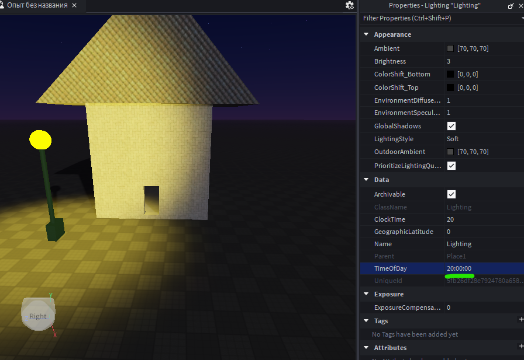
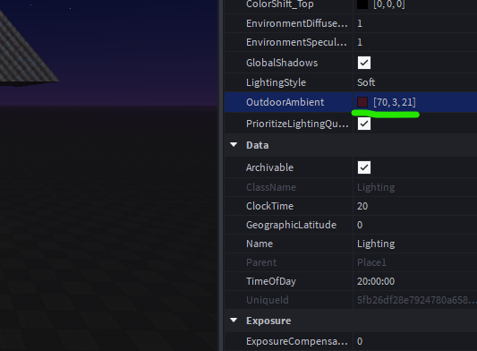
📁 Задание 5 — Группировка и сохранение
💭 Ты доволен своей деревней?
Оцени свои ощущения:
🧩 Вопросы на закрепление
Какой инструмент изменяет размер?
Какой материал светится в темноте?
Где взять готовые деревья, заборы и скамейки?
📝 Проверь себя
1. Какая клавиша дублирует объект?
2. Какой компонент добавляет точечный свет?
3. Чтобы объект не падал, нужно включить свойство...
4. Что такое Toolbox?
5. Какой материал делает объект светящимся?
6. Где меняют время суток и небо?